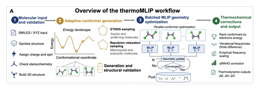
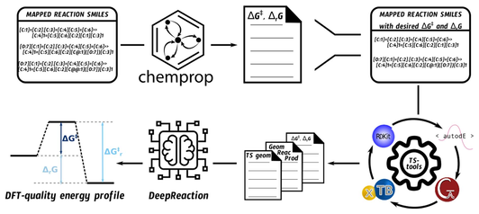
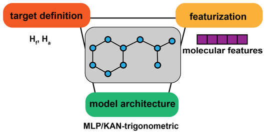
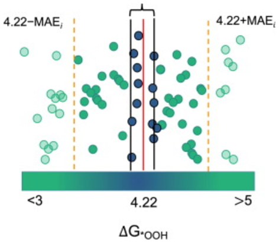
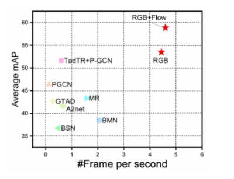
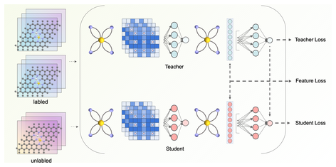
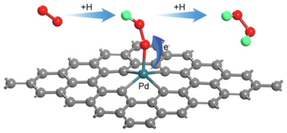

Bowen Deng
PhD Candidate · AI for Chemistry & Materials
I am on the job market (industry & academia) starting 2026
Learning across molecular representations.
I am a final-year PhD candidate at Chimie ParisTech – Université PSL, advised by Dr. Thijs Stuyver, working at the intersection of AI and chemistry / materials science. At its core, my research is about learning across molecular representations and their matching model families — 1D sequences (SMILES) with sequence models, 2D molecular graphs with graph neural networks, and 3D geometry with machine-learned interatomic potentials — for reaction discovery, thermochemistry, and molecular / materials property prediction, building models that are accurate, data-efficient, and physically grounded.
Previously, I completed my MSc with Prof. Shuangliang Zhao, and worked on computer vision (human action recognition) with Dr. Dongchang Liu at the Institute of Automation, Chinese Academy of Sciences. I am also broadly interested in large language models.
What's new.
- 2026 MLIP-Enhanced Thermochemistry Predictions across Organic Chemical Space accepted in Journal of Chemical Theory and Computation. I am on the job market!
- 2025 · Nov Paper on screening Diels–Alder reaction space published in Digital Discovery.
- 2025 Paper on graph-based thermodynamic property prediction published in J. Chem. Inf. Model.
-

-

-

-

-

-

-

Palladium-based single atom catalysts for high-performance electrochemical production of hydrogen peroxide
Chemical Engineering Journal, 428, 131112, 2022
Awards & service.
Kaggle Competitions Silver Medals ×3
- 🥈 Google Brain – Ventilator Pressure Prediction 2021
- 🥈 Hungry Geese 2021
- 🥈 Feedback Prize – Evaluating Student Writing 2022
Kaggle Competitions Expert
Academic Service
Reviewer for Digital Discovery.